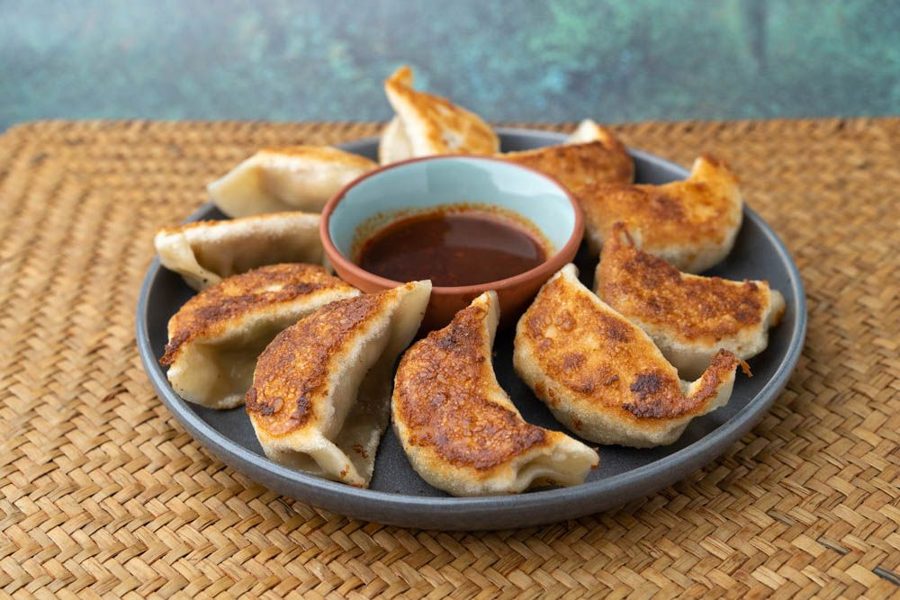

The word potsticker comes from the Chinese word wotip which literally means pot stick. Generally, wotip refers to pan fried dumplings, and this is just one of the thousands of varieties of dumplings found in cuisines all across the world. Even in just Chinese cuisine, you'll find dumplings with savory or sweet fillings, prepared in all sorts of methods. No one agrees on the exact origin of Chinese potstickers, but by one account, these came about when a chef of the Imperial Court accidentally left dumplings cooking in a wok, burning the bottom and claiming them as his own special creation.
This recipe is taken from Made With Lau.